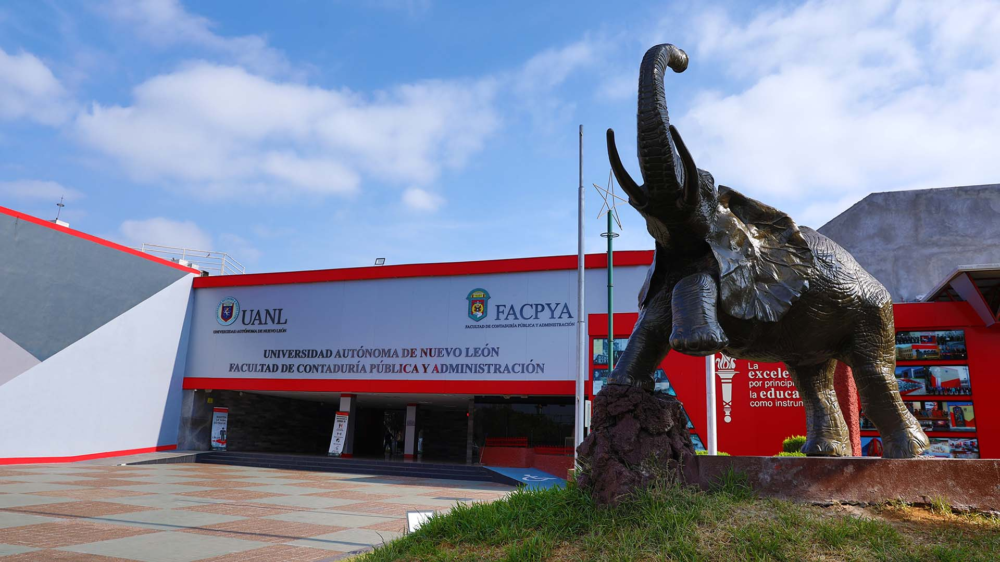

regresar
Lista de mis actividades
Adrián Ibi Gaspar Hernández
Mis pasa tiempos normal
Mis pasatiempos
Práctica 1 Css
Práctica 2 Css
Práctica 3 Css
Práctica 4 Css
Clase 1 de Javascript
Clase 2 de Javascript
Evidencia 2
